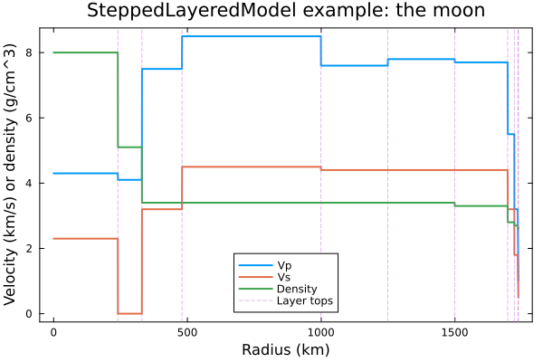
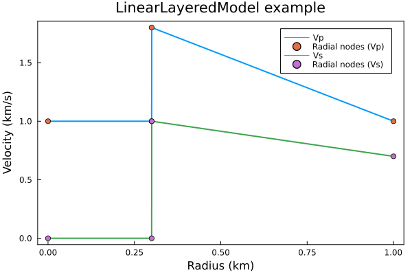
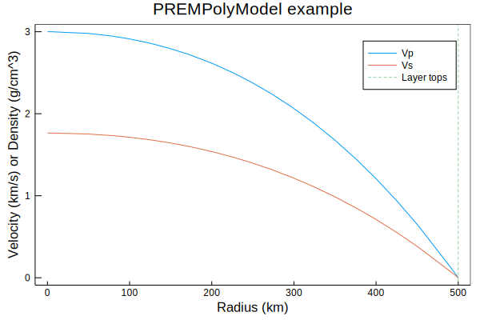

Model types
Type hierarchy
The module defines the SeisModel type and subtypes of this specify the kind of model (i.e., symmetry, nature of basis function, etc.).
The current type hierarchy is as follows:
SeisModel: Abstract type of all seismic modelsSeisModel1D: Abstract type of all one-dimensonal (radially-symmetric) seismic modelsSteppedLayeredModel: Type defined by layers with contstant properties.LinearLayeredModel: Type defined by layers with constant gradient.PREMPolyModel: Type defined by polynomials.
As you can see, there are currently three types of models implemented, all 1D models, with polynomial, linear or constant basis within each layer.
SteppedLayeredModel
A SteppedLayeredModel is composed of a series of layers with constant properties in each layer. The radii define the top of each layer.
An example of this is Weber et al.’s (2011) moon model:
/home/runner/work/SeisModels.jl/SeisModels.jl/docs/build/SteppedLayeredModel_example.svg
SeisModels.SteppedLayeredModel — TypeSteppedLayeredModel <: SeisModel1DA SteppedLayeredModel contains n layers each with constant properties.
See the constructor for details on creating SteppedLayeredModels.
LinearLayeredModel
A LinearLayeredModel is described by radial nodes, between which the properties vary linearly. Discontinutities are added by setting two subsequent nodes to have the same radii but different properties.
For example, a two-layer model for a planetesimal with radius 1 km and a liquid core at 0.3 km, with linearly varying properties, could be given by:
julia> using SeisModelsjulia> m = LinearLayeredModel(r=[0, 0.3, 0.3, 1], vp=[1, 1, 1.8, 1], vs=[0, 0, 1, 0.7])LinearLayeredModel(1.0, 4, [0.0, 0.3, 0.3, 1.0], [1.0, 1.0, 1.8, 1.0], [0.0, 0.0, 1.0, 0.7], Float64[], false, Float64[], Float64[], Float64[], Float64[], Float64[], false, Float64[], Float64[])
You can see that the nodes are used to define a constant lower layer and linearly-varying upper layer:

Use discontinuities to find the radii and layer indices of the discontinuities in a LinearLayeredModel.
SeisModels.LinearLayeredModel — TypeLinearLayeredModel <: SeisModel1DA LinearLayeredModel contains n points at which velocities are defined, with linear interpolation between them. Hence there are n - 1 layers.
Discontinuities are represented by two layers with the same radii.
Use discontinuities to find the radii and layer indices of the discontinuities in a LinearLayeredModel.
See the constructor for details on creating LinearLayeredModels.
PREMPolyModel
PREMPolyModels are parameterised (like PREM) by polynomials in each layer, considering the normalised radius $x=r/a$, where $a$ is the surface radius. Clearly, SteppedLayeredModels and LinearLayeredModels are specific cases of a polynomial parameterisation.
For example, PREM’s outer core density in g/cm³ is given by $12.5815 - 1.2638x - 3.6426x^2 - 5.5281x^3\,.$
One could imagine a single-layer planet whose velocities are described by
\[V_\mathrm{P}(x) = 3 - 2x^2 - x^3\,,\]
where $V_\mathrm{S} = V_\mathrm{P}/\alpha$, and $\alpha = 1.7$.
julia> radii = [500] # Layer tops in km1-element Vector{Int64}: 500julia> vps = reshape( # Ensure we have a matrix with 1 column and 4 rows [3 # x^0 coefficients in km/s 0 # x^1 -2 # x^2 -1], # x^3 :, 1)4×1 Matrix{Int64}: 3 0 -2 -1julia> α = 1.71.7julia> vss = vps./α4×1 Matrix{Float64}: 1.7647058823529411 0.0 -1.1764705882352942 -0.5882352941176471julia> m = PREMPolyModel(r=radii, vp=vps, vs=vss)PREMPolyModel(500.0, 1, [500.0], [3.0; 0.0; -2.0; -1.0;;], [1.7647058823529411; 0.0; -1.1764705882352942; -0.5882352941176471;;], Matrix{Float64}(undef, 0, 0), false, Matrix{Float64}(undef, 0, 0), Matrix{Float64}(undef, 0, 0), Matrix{Float64}(undef, 0, 0), Matrix{Float64}(undef, 0, 0), Matrix{Float64}(undef, 0, 0), false, Matrix{Float64}(undef, 0, 0), Matrix{Float64}(undef, 0, 0), NaN)
Note that the polynomial coefficients appear as the row of a matrix, and each layer occupies a column.
julia> using Plots: plot, plot!, vline!, savefigjulia> p = plot(xlabel="Radius (km)", ylabel="Velocity (km/s) or Density (g/cm^3)", title="PREMPolyModel example", framestyle=:box, grid=false)Plot{Plots.GRBackend() n=0}julia> for (f, name) in zip((vp, vs), ("Vp", "Vs")) plot!(p, r->f(m, r), 0, surface_radius(m), label=name) endjulia> vline!(p, m.r, line=(0.5,:dash), label="Layer tops")Plot{Plots.GRBackend() n=3}julia> savefig("PREMPolyModel_example.svg")"/home/runner/work/SeisModels.jl/SeisModels.jl/docs/build/PREMPolyModel_example.svg"

SeisModels.PREMPolyModel — TypePREMPolyModel <: SeisModel1DType describing the Earth as a set of layers within which properties vary according to a set of polynomials.
Physical parameters are represented by arrays of size (order+1, n), where n is the number of layers, and order is the order of polynomial which is used to represent the parameter. Hence a constant layer has size (1,n), and to compute the value of x in layer i, for an Earth radius of a km, at a radius of r km, the expression is:
val_x = x[i,1] + (r/a)*x[i,2] + (r/a)^2*x[i,3] ... (r/a)^order*x[i,order+1]The reference frequency in Hz for the velocities in case of attenuation is given by the fref field. If fref is NaN, then no reference frequency is defined for the model.
See the constructor for details on creating PREMPolyModels.
Attenuation
Attenuation in PREMPolyModels is specified as in PREM (see equation (3) in section 6 on page 309). That means, the shear and bulk quality factors ($Q_\mu$ and $Q_\kappa$ respectively) control the effective velocities, which will vary by wave frequency.
By default, velocities for PREMPolyModels are returned at the reference frequency, which can be found with reffrequency and is given in Hz. To obtain velocities at other frequencies, just pass a target frequency to the relevant function via the freq keyword argument.
In this example, we ask for the Voigt average isotropic shear-wave velocity at radius 4500 km for a frequency of 0.01 Hz (equally, 100 s period):
julia> vs(PREM, 4500, freq=0.01)6.840542771852348
Conversion
Conversion can be performed between any of the above model types. Note that in some cases (e.g., SteppedLayeredModel to LinearLayeredModel or LinearLayeredModel to PREMPolyModel) no information is lost, whilst in others (e.g., PREMPolyModel to LinearLayeredModel or to SteppedLayeredModel) the converted model can only be an approximation to the original.
To convert between model types, simply pass one model to the constructor of another. For example:
julia> m = PREM;julia> m2 = LinearLayeredModel(PREM);julia> typeof(m2)LinearLayeredModeljulia> ≈(mass(m), mass(m2))false
See the conversion section for details.